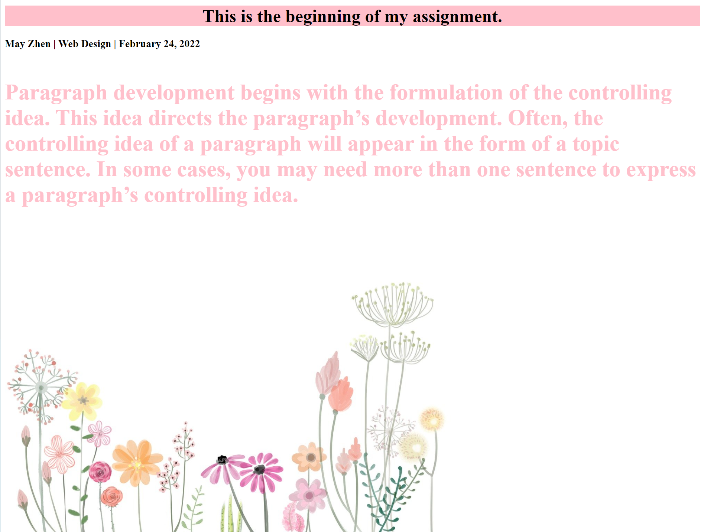

HTML and CSS
Reflecting on the semester, using HTML and CSS was the most challenging experience for me. The assignments were fairly self-explanatory so this wasn't part of the challenges I was facing. I was responsible for figuring out how to create the different HTML pages in assignment 2 on my own, as I was absent from class. It was easy to figure out once I got the hang of it, but it was definitely a learning experience. The CSS section of the class was more interesting to me. I've always liked being able to customize things and make them look aesthetically pleasing, so this was a great assignment to do. Finishing this class, my main takeaway would be how useful the internet can be for us. It is such a huge asset and using it to find code is the easiest way to complete tasks.
Other than the internet, one helpful resource that we had throughout the semester was Free Code Camp. This was a great way for me to learn how to use code but with the help of other people. If I didn't quite understand what was happening, there were other people available that are learning the exact same way I am. I enjoyed the setup of the website and how it felt more like a game than anything. It reminded me of playing Cool Math Games when I was in elementary school. This is probably why I looked forward to completing a section on Free Code Camp.

Here is an example of my CSS work.
Overall, this class has been useful to take as a Media Arts student. Learning how to create my own webpage using HTML and CSS is a skill I hope to continue gaining. It hasn't always been the easiest, but it's a practical skill that I am interested in learning more about!